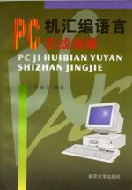

| PC机汇编语言实战精解 | 简介 | 前言 | 目录 | 下载 | |||||||||||||||||
|  |
这是我大学5年级时利用近1年的业余时间完成的作品，至今已近6年了。往事不堪回首。 我16岁时就让我老爸买电脑，我老爸把准备买录像机的2700元拿出来，买了一台当时最先进的PC兼容机，内有一颗NEC V20（8088兼容）CPU，具有640KB的庞大内存，两台5英寸360KB双面软盘驱动器，一台单色字符显示器，没有硬盘。卖电脑的人说，这台电脑可以用到二十一世纪。 那年是公元1991年，呵呵呵...... 我的第1盒软盘是在北京西单一个什么地方买的，买一盒软盘 |
||||||||||||||||||||
|
送一张游戏盘，有一个赛车游戏，还有一个“挖金子”，引导区里有个“合法大麻”病毒。我一直不明白为什么赛车游戏能玩可挖金子却玩不了。 上高二的时候在学校的阅览室里看到一本《计算机世界》杂志，我才明白原来我那单色显示卡不能直接运行CGA模式的图形软件，必须先设成CGA仿真模式。杂志上给了一个用汇编语言写的设置程序，我把那几页撕下来拿走了。 我不记得我是怎样用DEBUG.EXE实现那个程序的了，只记得自从那“挖金子”能玩起来之后，我的心思就转移到“汇编语言”上去了。 我的第1本汇编语言教材是从北京西四一家很小的书店买的，现在那书店早已不复存在。那是一本国外的翻译著作，这书的写作风格深深地影响了我，我的书也采用了那样的风格。 以我现在的眼光来看，我这本书写得不怎么样，真不怎么样。但我想对于那些渴望掌握真才实学的初学者来说，我这本书还是有用的。它真实地记录了我曾经走过的道路，我希望你也能走一走这条路，尽管它非常的崎岖。 |
|||||||||||||||||||||
| Copyright © 2004-2005 Chunk Lee | www.nucstorm.com | ||||||||||||||||||||